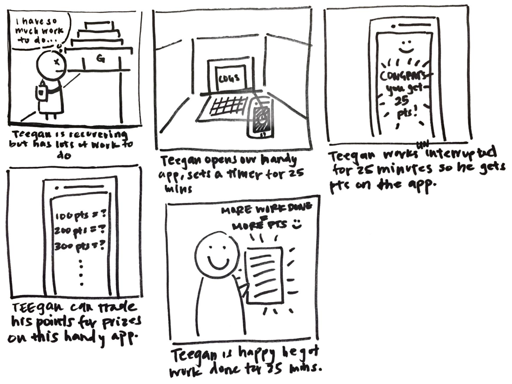
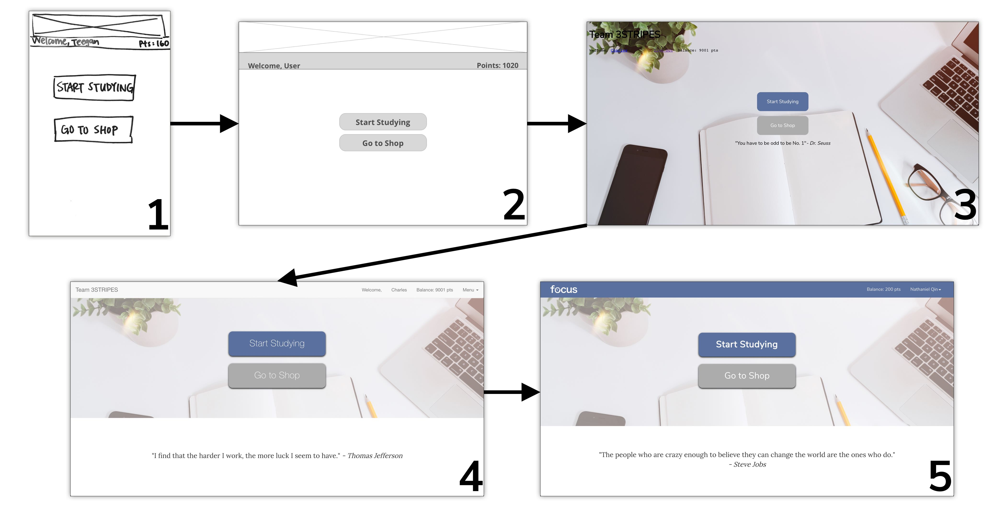
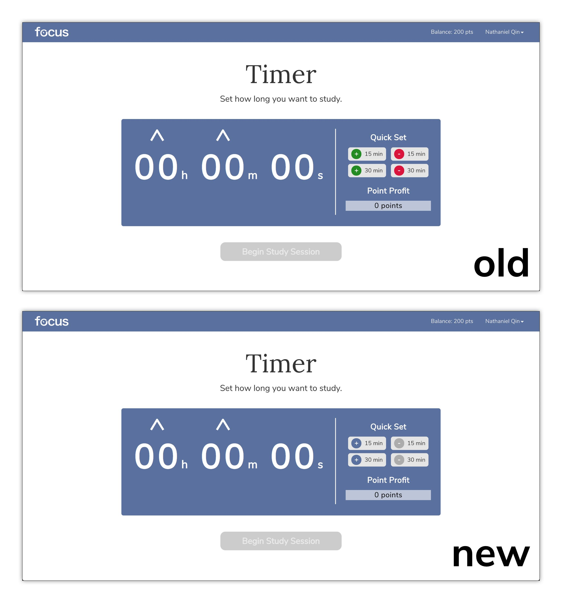

AT A GLANCE
Focus is a desktop web application that facilitates distraction-free study sessions. Users can set a timer for however long they want their study session to last. Navigating away from the page cancels the session, and successfully completing a session allows users to gain points, which they can spend in the shop to customize the look of the application.
Check it out >>
AFFILIATION \\ UCSD COGS 120
COGS 120 is a course at UCSD called the Interaction Design Studio. I took this course under Philip Guo, a Human Computer Interaction professor at UCSD. The goal of this course is to teach students the individual parts of the design process by completing a quarter-long project.
ROLES
User Interface Designer: I designed the layout of the web pages with two goals of aesthetic design and usability in mind. I also conducted a few iterations of simple user testing and heuristic evaluation with my initial designs.
Front-End Developer: I was the lead developer of the front end of our application, using HTML, CSS, and JavaScript. I also worked closely with Edward, our back-end developer, to implement web functionalities as well as clean interactions.
My Collaborators: Edward Chen, Eunice Chan
DESIGN GOALS
We began the project with the broad goal of trying to enhance health. With preliminary needfinding and research, we discovered a need for students who are recovering from sickness to catch up with the work that they missed. With this in mind, we developed a design goal: to design a solution that helps students who are recovering from sickness regain their productivity.
DESIGN PROCESS
In the first week of our project, we worked on narrowing the scope of our project down from the broad theme of enhancing health. To do this, we observed 3 different people who were recovering from illness and trying to catch upon their studies. With these observations, we were able to develop a list of possible needs to address. For example, here are a few that we found:
- Unwell students need motivation to continue productivity when fatigued.
- Unwell students need a way to catch up on lectures that are missed due to their illness.
- Unwell students need an easy way relieve symptoms without interrupting their workflow.
With all of the needs compiled, a prominent theme revolving around productivity emerged. With this in mind, we created a storyboard for a character name Teegan who needs to catch up on his work after missing classes due to his illness. The main goal portrayed in the storyboard is Teegan's successful study session, and his satisfaction in being able to be so productive.
Along with this storyboard, we also created an interactive paper prototype.
After testing our prototypes for heuristic evaluations and overall usability, we decided to go forward with developing the app as a desktop web application. Why not mobile? We decided to design for desktop because there are already many existing methods that help eliminate distractions on a mobile phone, such as airplane mode, or do not disturb. Furthermore, we felt from our research and user testing that more people would utilize the app on their computers because of the design concept of requiring the user to stay on the screen. This would drain the battery of a mobile device significantly more quickly than a laptop or desktop computer.
Going forward, we hit the grind of actually putting our designs into practice with web development technologies. As stated earlier, I led front-end development, and although my groupmates also assisted with this, I was the main person in charge of developing screens and various functionalities in HTML, CSS, and JavaScript.
One big thing that was a core principle in our development of this application was iterative design. We made many iterations of our screens before landing on our final design, in varying degrees of fidelity. Through this project, I really came to see the value of iterations as a way to solidify the look and feel of our product. Below is a demonstration of the many iterations that we practiced on our home screen.
After solely developing our application for three weeks, we finally conducted a few initial user tests. From these tests, our biggest takeaway was that people were actually having trouble finding the arrows on the timer page that helped them set the time. This was something that our group had overlooked, since we had been staring at the same page for quite some time.
With this feedback, we then conducted a form of qualitative A/B testing, in which we showed potential users different versions of the timer page and evaluated their feedback. After a few rounds of this, we finally landed on our final design.
In our final design, we implemented two changes. First, we animated the arrows with a bouncing motion after discovering that the motion helped draw attention to it. Second, we softened the colors of the quick set buttons. This not only helps bridge cultural differences, as we can't assume that green signifies positivity for everyone, but also works to deflect immediate attention to the quick set buttons.
SCREENS
\ LANDING \
Users begin on this screen, which provides a quick overview of what our application does. Scrolling down, users can find more at a glance information, including how our application works at a high level, as well as information about each of our group members.
\ HOME \
This screen serves as the home page for our application. From here, users can either begin a study session or visit the shop to purchase items to customize the look of the application.
\ TIMER \
The timer is the main functionality of our application. Users can set the time for how long they want their session to be, up to a maximum of 2 hours. While they study, inspirational quotes will also fade in and out at the bottom of the screen.
\ SHOP \
Here, users can spend their points to buy things to change the look of their application. Available for purchase are various color themes and animations the travel across the screen on the timer page as it runs.
\ PROFILE \
On the user's profile, they can see a history of all of their sessions, whether they were successes or failures.
IN RETROSPECT
Throughout the course of this project, I definitely wish that we had spent more time in lo-fidelity design, perhaps by creating an additional iteration of wireframes in a program like Balsamiq.
I also wish that we could have spent more time on the look of our application, including making more extensive color themes, as well as more refined animations. Unfortunately, due to time constraints, I feel that these ideas were not executed to their full potential.
NEXT STEPS
Going forward with this project, we've definitely begun to see the shortcoming of the incentives that we provide. None of the rewards are tangible, nor social, so they are barely enticing at best. Given more time, we had planned to implement a social aspect, in which users can add friends and view others' profiles to see which themes or animations they own. On top of this, we would have liked to implement a leaderboard to add an element of competition and gamification to provide stronger incentives for studying user our app.
TOOLS
HTML5
proficient
CSS3
proficient
Javascript
proficient
Sketch
proficient
jQuery
familiar